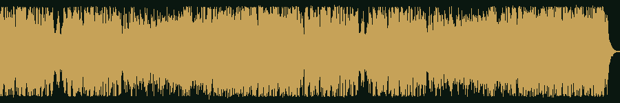

A
首推
武俠 其二 · 古筝与琵琶
Wuxia2 (Guzheng & Pipa)
00:00全曲 4:16 · 配器就是古筝 + 琵琶04:16
时长
4:16
交付体积 AAC
4.00MB
亮度（质心）
1266Hz
低频厚度 <250Hz
6.7%
动态范围
7.2dB
节拍
103BPM
起音密度
2.52/s
首尾能量差
+0.3dB
游源标签
Asian · Happy · Chinese · World · Positive · Upbeat
为什么首推
13 条里最"暖"也最"轻"的一条：质心 1266 Hz 偏低、低频只占 6.7%、动态 7.2 dB，
读起来是「音量平稳、没有大鼓砸底、中频厚实」—— 这正好是长时间挂着当循环 BGM该有的样子，
不会把牌面落槽、吃碰念白的频段抢掉。
另外它是唯一一条官方直接提供 loop 打包的候选（
PerituneMaterial_Wuxia2_Guzheng_Pipa_loop.zip），
后期做无缝循环不用自己找切点。
要留意的
4:16 偏长；全曲 5.86 MB，直接进主包会顶穿 4 MB 红线（见下方「打包体积」）。
商用免费署名可选
官方 loop 文件古筝 + 琵琶